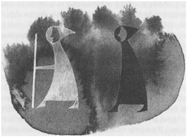

ALTI: AV

Pendor arkasında, ufukta gözden kaybolduktan sonra doğuya bakan Ged, gönlüne yeniden gölgenin korkusunun düştüğünü hissetti; ejderhaların aydınlık tehlikelerinden, şekilsiz ve ümitsiz bir dehşete dönmek çok zordu. Büyürüzgârını durdurdu, dünyanın rüzgârıyla gitmeye başladı çünkü artık içinde hız yapma arzusu yoktu. Ne yapması gerektiğine dair bir planı bile yoktu. Ejderhanın da demiş olduğu gibi kaçması gerekiyordu; ama nereye? Roke’a, diye düşündü, en azından orada korunuyordu; sonra orada bilgelere danışabilirdi.
Fakat önce, bir kez daha Aşağı Toming’e gidip olanları ada halkına anlatması gerekiyordu. Gittiğinin beşinci günü, döndüğü haberi yayılınca adalılar ve kazada yaşayan insanların yarısı kayıklarıyla, koşarak geldiler, etrafını aldılar, onu seyrettiler ve dinlediler. Ged öyküsünü anlattı; adamlardan biri, "Ama bu katledilen ve aciz bırakılan ejderhaları kim görmüş? Ya bize..." diyecek oldu.
"Kes sesini," dedi Adalıların Başkanı kabaca; çünkü o da dinleyenlerin bir çoğu gibi biliyordu ki, büyücülerin gerçeği kendilerine göre kurnazca anlatma yöntemleri vardır; çünkü olanlar onların ustalıklarıdır; gerçeği sadece kendilerine saklayabilirler ama bir şey oldu diyorlarsa o şey olmuştur. Bu yüzden ada halkı çok şaşırdı. Korkularının geçtiğini hissetmeye ve ardından da sevinçlerini kutlamaya başladılar. Genç büyücülerinin etrafını alıp, öyküyü bir kez daha anlatmasını istediler. Derken daha çok insan geldi ve tekrar Ged'in öyküsünü anlatmasını istedi. Gece çökerken, artık Ged'in öyküsünü anlatmasına gerek kalmamıştı. Onlar onun yerine, daha güzel başarıyorlardı bu işi. Köy okuyucuları öyküyü, eski bir ezgiye uydurmuşlar ve Çevik Atmaca'nın Şarkısı'nı söylemeye başlamışlardı bile. Sadece Aşağı Torning'de değil; doğudaki ve güneydeki kazalarda da, şenlik ateşleri yakıldı. Balıkçılar kayıktan kayığa haberi bağırıyorlardı. Adadan adaya haber yayılmıştı: Kötülük önlendi, ejderhalar Pendor'dan buralara gelmeyecekler!
O gece, yalnızca o gece, Ged için eğlence doluydu. Hiçbir gölge o gece, her tepede ve her kumsalda yakılmış olan o şükran ateşlerinin parlaklığından sıyrılarak veya etrafını çevirip dans eden, onu öven şarkılar söyleyen, ellerindeki meşaleleri rüzgârlı sonbahar akşamı içinde sallayan insan halkalarının içinden geçerek ona ulaşamazdı. İnsanlar meşalelerini salladıkça, yoğun, parlak ve çabucak geçen kıvılcımlar, rüzgâra doğru yükseliyordu.
Ertesi gün, ona "Senin bu kadar yüce biri olduğunu bilmiyordum, efendimiz," diyen Pechvarry ile karşılaştı. Bu sözlerde bir korku gizliydi çünkü Ged'le arkadaşlık etmeye cüret etmişti; fakat aynı zamanda bir serzeniş de vardı. Ged ejderhaları öldürmüştü ama onun çocuğunu kurtarmamıştı. Bu konuşmadan sonra Ged, Pendor'a gitmesine neden olan sabırsızlığı ve huzursuzluğu yeniden hissetti. Bu sabırsızlık ve huzursuzluk onu şimdi de Aşağı Torning'den uzaklaştırıyordu. Aslında adalılar onu ömrünün sonuna kadar övüp, övünerek memnuniyetle konuk ederlerdi ama, Ged, ertesi gün tepedeki evinden, sadece kitapları, asası ve omuzundaki otakı ile ayrıldı.
Ged, onun kayıkçısı olma şerefi için yanşan birkaç balıkçı ile birlikte bir kayıkla, Aşağı Toming'den ayrıldı. Suyun üzerine doğru eğilmiş balkon ve pencerelerin altından; Nesh'in rıhtımlarının, Dromgan'ın yağmurlu çayırlarının, Geath'in pis kokulu yağhanelerinin ve Doksan Adalar'ın doğu kanallarını dolduran teknelerin arasından kürek çekerek ilerlerken, hep Ged'in kahramanlıklarının kendilerinden önce gitmiş olduğunu gördüler. O ilerledikçe insanlar Çevik Atmaca'nın Şarkısı'nı ıslıkla çalıyorlar ve Ged'in kendilerinde konaklayıp, ejderhanın öyküsünü anlatması için, birbirleriyle yarışıyorlardı. En sonunda Serd'e geldiğinde, Roke'a gitmek için başvurduğu geminin kaptanı, önünde yerlere kadar eğilerek ona, "Benim için bir ayrıcalık, gemim için ise bir onurdur, Büyücü Hazretleri!" dedi.
Böylece Ged, sırtını Doksan Adalar'a çevirdi; fakat daha gemi Serd'in İç Limanı'ndan yeni ayrılmış ve yelkenini yeni açmıştı ki, doğu yönünden sert bir rüzgâr esti. Bu biraz garipti, çünkü kış olmasına rağmen gökyüzü açıktı. O sabah da, hava yumuşak olacağa benziyordu. Serd ile Roke arası sadece otuz mildi; gemi yola koyuldu. Rüzgâr arttı; onlar yollarına devam ettiler. İç Deniz ticari gemilerinin çoğu gibi, bu küçük geminin de, önden gelen rüzgârı yakalayabilmek için bir yan yelkeni vardı; sonra kaptan da, ustalığıyla övünen, becerikli bir gemiciydi. Bir güneye bir kuzeye zikzaklar çizerek, doğuya doğru ilerlediler. Her yandan bora halinde deli gibi esen rüzgârla gelen bulut ve yağmurun gemiyi ciddi bir biçimde sürükleme tehlikesi vardı. "Çevik Atmaca Hazretleri," dedi geminin kaptanı, geminin kıçındaki şeref köşesinde onunla beraber oturan genç adama -gerçi hepsini su içindeki cübbeleriyle, perişan bir durumda pırıl pırıl parlayıncaya kadar sırılsıklam eden o rüzgâr ve yağmur altında pek şerefe falan bakılacak gibi değildi- "Çevik Atmaca Hazretleri, acaba bu rüzgâra bir şeyler söylemeniz mümkün müydü?"
"Roke'a ne kadar yaklaştık?"
"Yarı yolu aştık. Fakat, son bir saattir hiç yol kaydedemedik, beyim."
Ged rüzgârla konuştu. Rüzgâr daha yavaş esti, bir süre için oldukça iyi yol kaydettiler. Derken, güneyden, ıslık çala çala büyük bir bora geldi. Bu borayla karşılaşınca, tekrar batıya doğru geri sürüklendiler. Bulutlar gökyüzünde kaynaşıyordu; kaptan hiddetle kükredi: "Bu soytarı rüzgâr, aynı anda her yandan esiyor! Bizi bu havadan ancak büyürüzgârı kurtarır efendim."
Ged bu öneriyi asık yüzle karşıladı, fakat gemi ve adamlar onun yüzünden tehlikeye girmişlerdi, o nedenle yelkenleri büyürüzgârıyla doldurdu. Gemi hemen doğuya doğru fırlayınca kaptanın yüzü yeniden gülmeye başladı. Fakat, yavaş yavaş, Ged tılsıma devam ettiği halde, büyürüzgârı şiddetini kaybederek, gemi bir an için, tüm o keşmekeşin içinde yelkenleri düşüp, dalgaların üzerinde hareketsizce asılı kalıncaya kadar zayıfladı. Sonra, büyük bir gümbürtüyle seren döndü ve gemi de ürkmüş bir kedi gibi kuzeye doğru zıplayarak sürüklenmeye başladı.
Gemi hemen hemen yan yatmış olduğu için, Ged payandaya yapışarak bağırdı, "Kaptan, Serd'e geri dön!"
Kaptan lanet okudu ve bağırarak geri dönmeyeceğini söyledi: "Gemide bir büyücü olsun, ben de mesleğin en iyi gemicisi olayım, bu da bugüne kadar sürdüğüm en iyi gemi olsun da, ben geriye döneyim ha?"
Sonra geminin omurgası bir girdaba kapılmış gibi tekrar dönünce, kaptan da denize düşmemek için payandaya zor tutundu. Ged ona, "Beni Serd'e bırak, sonra nereye istersen git. Bu rüzgâr senin gemine karşı esmiyor, bana karşı esiyor," dedi.
"Size karşı mı? Roke'lu bir büyücüye karşı mı?"
"Hiç Roke-rüzgârını duymuş muydunuz kaptan?"
"Evet, kötü güçleri Bilgeler Adası'ndan uzak tutan rüzgâr. Ama bunun sizle, bir ejderha terbiyecisiyle ne ilgisi olabilir ki?"
"Bu gölgemle benim aramda olan bir şey," diye kestirip attı Ged her büyücünün yapacağı gibi. Sabit bir rüzgârla, açılmakta olan gökyüzünün altında, deniz üzerinden hızla Serd'e doğru giderken, başka bir şey de söylemedi.
Serd'in rıhtımından giderken, içinde bir ağırlık, bir endişe vardı. Kış yaklaştığından günler kısalıyor, hava çabuk kararıyordu. Hava kararınca Ged'in huzursuzluğu hep artardı; şimdi ise her sokağın dönemeci, ona bir tehlike gibi görünüyor, arkasından neyin gelmekte olduğunu görmek için, omuzundan geriye bakmamak için kendisini zorlaması gerekiyordu. Ged, Serd'deki Deniz Evi'ne gitti. Deniz Evleri, yiyeceklerin kaza tarafından sağlandığı, yolcuların ve tüccarların beraberce yiyip içtikleri ve isterlerse, üstü kapalı uzun salonunda uyuyabildikleri yerlerdir, yemekleri de iyidir. Buraları, bayındır İç Deniz adalarının misafirperverliğinin bir örneğidir.
Kendi yemeğinden bir parça et ayıran Ged, daha sonra ateşin kenarında, bütün gün boyunca kıvrılmış olduğu kapüşonunun içinden otakını diller dökerek çıkartıp, eti ona yedirmeye çalıştı. Bir yandan hayvanı okşuyor, bir yandan da fısıldıyordu, "Hoeg, Hoeg, küçüğüm benim, sessiz Hoeg..." Fakat hayvan yemek yemedi ve tekrar saklanmak için Ged'in cebine tırmandı. Bu yüzden, kendi kasvetli güvensizliğinden ve büyük odanın köşelerindeki karanlığın görünüşünden, gölgenin fazla uzakta olmadığını anladı.
Burada kimse onu tanımıyordu: Buradakiler, Çevik Atmaca'nın Şarkısı’nı bilmeyen, diğer adalardan gelmiş yolculardı. Kimse onunla konuşmadı. En sonunda kendisine ot bir şilte seçip uzandı; ama tüm gece boyunca o üstü kapalı salonda, uyumakta olan yabancıların arasında, gözlerini kırpmadan yattı. Bütün gece boyunca yolunu çizmeye, gideceği yeri ve yapacağı şeyi tasarlamaya çalıştı, ama her seçenek, her tasarı kötü bir son sezgisiyle tıkanıyordu. Her yolun sonunda gölge oluyordu. Sadece Roke'ta yoktu gölge: Roke'a da Ged gidemiyordu. Tehlikedeki adayı koruyan yüksek, karmaşık ve eski büyüler Ged'in girmesini engelliyordu. Roke-rüzgârının ona karşı esmiş olması, peşinde olan şeyin, çok yakında olduğunu kanıtlıyordu Ged'e.
O şey vücutsuzdu, gün ışığına kördü; ışıksız, yersiz, zamansız bir diyarın yaratığıydı. Gün boyunca, güneşin aydınlattığı dünyanın denizlerinde, Ged'i el yordamıyla izleyebiliyor, ancak geceleri, rüyada ve karanlıkta, görülebilen bir şekle bürünüyordu. Daha henüz, güneşin ışınlarının üzerine düşebileceği bir varlığı veya bir cismi yoktu. Hode'un Kahramanlıkları'nda da söylendiği gibi, "Günün ağarması dünyayı ve denizi vareder; gölgeden şekli çıkartır, düşü karanlıklar krallığına kovar." Fakat gölge bir kez Ged'e yetişmeye görsün, Ged'in gücünü, hatta vücudunun ağırlığını, sıcaklığını ve yaşamını, onu hareket ettiren iradesini de çekip alabilirdi.
Önünde uzanan her yolun sonunu, işte böyle görüyordu Ged. Ayrıca, bu sona doğru gitmesi için, kandırılabileceğini de biliyordu; çünkü Ged'e daha da yaklaşmış olduğu için, her an biraz daha kuvvetlenen gölge, şu anda bile kötü güçleri veya kötü adamları, Ged'e yanlış ipuçları vermeleri için kendi emrinde çalıştıracak kadar güce sahip olabilir veya bir yabancının sesiyle konuşabilirdi. Bütün bildiği, o kara şeyin bu gece, bu Deniz Evi'nin köşelerinden birinde uyumakta olan bu adamlardan birinin içine gizlenmiş olabileceğiydi. Karanlık bir ruhta kendisine sağlam bir yer bulmuş, Ged'i izleyerek bekliyor ve Ged'in şu anki zayıflığından, güvensizliğinden ve korkusundan besleniyordu.
Dayanılır şey değildi bu. Kendisini şansa bırakıp, talihinin çizdiği yoldan gitmesi gerekecekti. Ged, şafağın ilk işaretiyle kalkıp solmakta olan yıldızların altında, Serd rıhtımına doğru hızla ilerledi. Önüne çıkan ilk gemiye binip, gemi onu nereye götürürse, oraya gitmeye kararlıydı. Kadırgalardan birine, turbie yağı yükleniyordu; gemi şafakla, Havnor'un Büyük Limanı'na gitmek için yola çıkacaktı. Ged, geminin kaptanından yolculuk için izin istedi. Büyücü asası, çoğu gemilerde, bir pasaport, bir bilet yerine geçer. Ged’i gemiye memnuniyetle aldılar; bir saat içinde de gemi denize açıldı. Kırk küreğin suya dalmasıyla, Ged'in sıkıntıları dağıldı; kürekçilere tempo tutan davulun sesi bile ona tatlı geliyordu.
Ama yine de Havnor'da ne yapacağını veya oradan nereye geçeceğini bilmiyordu. Onun için her yer birdi; kuzeye de gidebilirdi. Zaten kendisi de bir Kuzeyli'ydi; belki Havnor'dan, kendisini Gont'a götürecek bir gemi bulabilir, Ogion'u tekrar görebilirdi. Veya onu çok uzak Uçyörelere; gölgenin, onun izini kaybedip, onu izlemekten vazgeçeceği kadar uzak yerlere götürebilecek bir gemi bulabilirdi. Kafasında, bu tür belirsiz düşünceler dışında herhangi bir tasarı yoktu. İzlemesi gerektiğine inandığı bir yol da yoktu. Sadece kaçması gerekiyordu...
O kırk kürek gemiyi, Serd'den ayrılışlarının ikinci günü daha güneş batmadan, yüz elli milden uzak bir mesafeye ulaştırdı. Büyük kara parçası Hosk'un doğu sahilinde bulunan Orrimy'nin limanına yanaştılar. İç Deniz'e ait bu ticaret kadırgaları kıyıdan yol alırlar ve mümkün olan yerlerde, geceyi limanlarda geçirirler. Hava hâlâ aydınlık olduğundan Ged karaya çıktı; amaçsız ve düşünceli, liman kentinin dik sokaklarında gezinmeye başladı.
Orrimy, ağır taşlar ve tuğlalarla inşa edilmiş, Hosk Adası'nın iç kesimlerinde yaşayan kanunsuz hükümdarlara karşı surlarla çevrilmiş, eski bir kasabadır. Doklarda bulunan ambarlar kale gibidir; kulelerle korunan tüccarların evleri ise, tahkim edilmiştir. Yine de sokaklarda gezinen Ged için, bu dev yerleşim birimleri, gerisinde boş bir karanlık bulunan bir peçeydi; yanından geçmekte olan, kendilerini tamamen işlerine vermiş insanlar ise ona, gerçek insan değil de insanların sessiz gölgeleriymiş gibi geliyordu. Güneş kavuşurken Ged tekrar rıhtıma döndü; orada, akşamın engin kızıllığında ve rüzgârında bile, deniz ve kara ona, sessiz, donuk geldi.
"Yolunuz ne yana, Büyücü Hazretleri?"
Böyle selamladı birisi onu, arkasından. Döndüğünde, elinde ağır bir tahtadan yapılmış, ama büyücü asası olmayan bir asa taşıyan, griler giyinmiş bir adam gördü. Yabancının yüzü, kapüşonun içinde kaldığından, kızıl ışıktan korunuyordu; fakat Ged, adamın görünmeyen gözleriyle onu izlediğini hissetti. O da bakışlarıyla karşılık vererek, porsukağacından yapılmış asasını, yabancıyla arasına alarak kaldırdı.
Kibarca sordu adam: "Neden korkuyorsunuz?"
"Beni arkamdan izleyenden."
"Yani? Ben sizin gölgeniz değilim ki."
Ged sesini çıkarmadan durdu. Gerçekten de bu adamın, her ne idiyse, onun korktuğu şey olmadığını biliyordu: O bir gölge, bir hayalet veya bir gebbet-yaratığı değildi. Dünyanın üzerine çökmüş olan bu kuru sessizlik ve gölge içinde bile, bir sese, hatta biraz da cisme sahipti. Sonra kapüşonunu kaldırdı. Garip, kırışık, kel bir kafası, çizgilerle dolu bir yüzü vardı. Sesi yılların izini taşımasa bile, görünüşü yaşlı bir adam olduğunu gösteriyordu.
"Emin değilim ama," dedi griler içindeki adam, "belki de tanışmamız tesadüf değildi. Genç bir adamın, yüzü yaralı bir adamın, karanlıklar içinden geçip, büyük bir egemenlik, hatta bir krallık kazandığının öyküsünü duymuştum bir zamanlar. Bu öykünün senin öykün olup olmadığını bilmiyorum. Fakat sana şu kadarını söyleyeyim: Eğer gölgelerle savaşmak için bir kılıca ihtiyacın varsa, Terrenon Sarayı'na git. Porsukağacından yapılmış bir asa senin işine yaramaz."
Adamı dinlerken Ged'in içinde ümit ve güvensizlik savaş veriyordu. Büyücülükle ilgisi olan bir insan, kısa bir süre sonra, hayatındaki hiçbir şeyin, iyi olsun kötü olsun, tesadüf eseri olmadığını öğrenirdi.
"Terrenon Sarayı hangi ülkededir?"
"Osskil'de."
Bu ismi işitir işitmez Ged, bir an için, belleğinin bir oyunuyla, yeşil otlar üzerinde, ışıl ışıl boncuk gözleriyle onu yandan süzen ve konuşan kara bir kuzgun gördü; ama kuzgunun sözlerini unutmuştu.
"O ülkenin adeta karanlık bir ismi var," dedi Ged, griler içindeki adamdan gözlerini ayırmadan, ne biçim bir adam olduğunu anlamaya çalışarak. Sihirbaz, hatta büyücü olabileceğini düşündüren bir havası vardı adamın; gerçi Ged'le korkusuzca konuşmuştu ama tuhaf, bitkin bir görünüşü vardı, hasta, tutsak veya köleye benzeyen bir görünüş.
"Sen Roke'tansın," dedi adam. "Roke büyücüleri, kendilerine ait olmayan büyülere karanlık isimler takarlar."
"Sen ne biçim bir adamsın?"
"Bir gezgin. Osskilli bir tüccarın temsilcisiyim, buraya iş için geldim," dedi grili adam. Ged'den bir cevap alamayınca, genç adama iyi geceler dileyip, rıhtımın üzerindeki basamaklı dar sokaklarda uzaklaştı.
Bu işareti önemseyip önemsememe konusunda çelişki içinde olan Ged, dönüp kuzeye baktı. Kızıl ışık, dağların ve rüzgârlı denizin ardından hızla kayboluyordu. Eteklerinde geceyi barındıran, gri karanlık çöktü.
Ged ani bir kararla, rıhtım boyunca hızla ilerleyerek, ağlarını kayığına yerleştiren bir balıkçıya yaklaşıp onu selamladı: "Bu limanda, kuzeye, Semel'e veya Enlad'lara gidecek olan bir gemi var mı acaba?"
"Şuracıkta duran büyük gemi Osskil'den; belki o Enlad'lara uğrar."
Aynı hızla Ged, balıkçının işaret ettiği büyük gemiye gitti: Altmış kürekli; yassı yuvarlak loto-kabukları kakılmış yüksek ve eğri yontma pruvası, küreklerin çıktığı, her birine siyahla eski Sifl harfi yazılı lumbar kapakları olan, kırmızı boyalı, bir yılan kadar ince, büyük bir gemi. Kasvetli ve hızlı bir gemiye benziyordu. Yükü istiflenmiş, mürettebatı da güvertede hazır bekliyordu. Ged geminin kaptanını arayarak, Osskil'e kadar yolculuk etmesine izin vermesini rica etti.
"Ücretini ödeyebilir misin?"
"Rüzgâr konusunda hünerlerim var."
"Ben kendim de iklimciyim. Verebilecek hiçbir şeyin yok mu? Hiç mi paran yok?"
Aşağı Toming'de Adalılar Ged'e ellerinden geldiğince, Adalar Diyarı'ndaki tüccarlar tarafından kullanılan fildişi parçalarıyla bir ödeme yapmışlardı. Daha fazla vermek istedikleri halde Ged, sadece on parça almıştı. Ged bunları Osskilli'ye önerdi ama adam başını salladı. "Biz bunları kullanmıyoruz. Eğer karşılığında verecek bir şeyin yoksa, gemide de yerin yok demektir."
"Kol kuvvetine ihtiyacınız var mı? Daha önce bir kadırgada kürek çekmiştim."
"Eyvallah. İki eksiğimiz var. Git oturacak bir sıra bul kendine," diyerek bir daha Ged'i hiç umursamadı kaptan.
Kitaplarının durduğu torbayı ve asasını, kürekçilerin oturduğu sıranın altına koyan Ged, o kış günlerinde, on zorlu gün boyunca o Kuzey gemisine kürekçi oldu. Gün ışırken, Orrimy'den ayrıldılar; o gün Ged, işini başaramayacağını düşündü. Sol kolu, omuzundaki eski yaralar nedeniyle biraz sakatlanmış; Aşağı Toming'in kanallarındaki kürek çekme deneyimleri, davulun sesiyle amansızca, durmadan çekilen bu büyük kadırga küreklerine hazırlayamamıştı onu. Kürek başında geçen her nöbet, iki üç saat sürüyor; sonra sırayı bir sonraki vardiyanın kürekçileri alıyorlardı ama Ged'in adeleleri anca toparlanıyordu ki, sıra tekrar ona geliyordu. İkinci gün, birincisinden de kötüydü. Fakat ondan sonra Ged işe alıştı ve oldukça ilerledi.
Roke'a ilk gittiği zaman bindiği Gölge gemisindeki arkadaşlık ortamı, bu gemide yoktu. Andrade ve Gont gemilerinde mürettebat, ortak bir kâr için çalışır, yapılan ticarete ortaktır; halbuki Osskilli tüccarlar, bu iş için ya köle, ya toprağa bağlı köylü kullanırlar, ya da az miktarda altın karşılığında adam çalıştırırlar. Osskil'de altın çok önemlidir. Fakat altın, ne oralarda, ne de altına çok önem veren ejderhalar arasında, arkadaşlık için bir araç olmamıştır. Gemideki mürettebatın yarısı, toprağa bağlı köylülerden olduğundan, zorla çalıştırılıyorlardı; geminin yöneticileri ise köle kâhyasıydı; üstelik insafsızdılar da. Kırbaçlarını, para veya yolculuk hakkı için kürekçilik yapanların sırtına hiç indirmiyorlardı, ama kimisi kırbaçlanan, kimisi de kırbaçlanmayan bir mürettebat arasında pek arkadaşlık ortamı oluşturulamazdı. Ged'in yanındakiler aralarında pek konuşmuyorlardı; Ged ile ise daha da az konuşuyorlardı. Mürettebatın çoğu Osskilli'ydi. Bunlar, Adalar Diyarı'da konuşulan Hard diliyle değil, kendilerine özgü bir lisanla konuşan, açık tenli, sarkık siyah bıyıklı, düz saçlı, ters insanlardı. Ged'in onlar arasındaki ismi Kelub, kızıl idi. Büyücü olduğunu bildikleri halde, ona hiç saygı göstermiyor, sakıngan bir kin besliyorlardı. Gerçi Ged de arkadaşlık kuracak durumda değildi. Boş gri deniz üzerinde hızla ilerlemekte olan gemilerden birindeki altmış kürekçiden biri olarak, küreklerin müthiş temposuna kapılmış sırasında otururken bile, kendisini korunmasız ve çaresiz hissediyordu. Akşam vakti yabancı limanlara girdiklerinde, cübbesine sarınıp uyumaya hazırlanırken, o kadar yorgunluğunun içinde, uyuyup uyanıp rüya görüyordu; uyandığında hatırlayamadığı kötü rüyalar. Ama gördüğü rüyalar sanki gemide ve gemideki insanların üzerine asılı kalıyordu; o yüzden Ged gemidekilerin her birinden kuşkulanıyordu.
Osskilli bütün özgür adamlar, bellerinde uzun bıçaklar taşıyorlardı. Bir gün, Ged'lerin grubu öğlen yemeğini yerken, adamlardan biri Ged'e sordu: "Sen köle misin, yoksa yemininden dönmüş biri misin, Kelub?"
"Hiçbiri."
"Niye bıçağın yok o zaman? Dövüşmeye mi korkuyorsun?" dedi adı Skiorh olan adam, alayla.
"Hayır."
"Senin yerine küçük köpeğin mi dövüşüyor?"
"Otak," dedi, onları dinlemekte olan başka biri. "Köpek değil, bir otak o." Sonra Skiorh'un kaşlarını çatıp dönmesine neden olan bir şey söyledi Osskil dilinde. Tam dönerken, Ged, Skiorh'un yüzünde bir değişiklik gördü: sanki bir an için onu bir şey değiştirmiş, kullanmış ve yan gözle de onun gözlerini kullanarak Ged'e bakmış gibi; çehresinde bir bulanıklık, bir değişiklik. Buna rağmen Ged, hemen ardından adamın yüzünü önden gördüğünde, bir değişiklik fark etmedi. Bu yüzden Ged, kendi kendine, görmüş olduğu şeyin kendi korkusundan kaynaklandığını, kendi endişesinin bir başkasının gözlerine yansıdığını, düşündü. Fakat o gece, Esen limanında konakladıklarında, bir rüya gördü; rüyasında Skiorh dolaşıyordu. Bu olaydan sonra, Ged elinden geldiği kadar adamla karşılaşmamaya çalıştı; sanki Skiorh da ondan kaçınıyordu; bir daha da aralarında hiçbir konuşma geçmedi.
Havnor'un kar kaplı dağları arkalarında, güneyde, kışın ilk günlerinin pusu altında bulanıklaşarak, gözden kayboldu. Yıllar önce Elfarran'ın boğulmuş olduğu Ea Denizi'nin ağzından, Enlad'ın yanından geçtiler. İki gün süreyle, efsanelerle dolu Enlad'ın batısında, körfezin üzerinden bembeyaz yükselen bir liman kenti olan Berila'da, Fildişi Şehri'nde konakladılar. Gittikleri her limanda mürettebat gemide tutuluyor, karaya ayak basmalarına izin verilmiyordu. Sonra kızıl güneş yükselirken, Osskil Denizi'ne, Kuzey Yöreleri'nin adasız enginlerinden, hiçbir engelle karşılaşmadan esmekte olan kuzeydoğu rüzgârlarının içine doğru kürek çekmeye başladılar. O sert denizden yüklerini sağ salim geçirip, ikinci gün Berila’dan çıkarak, Doğu Osskil'in ticaret kenti olan Neshum limanına vardılar.
Ged, yağmur yüklü rüzgârların kamçılamış olduğu alçak bir sahil ile limanı oluşturan uzun taş dalgakıranların ardına sinmiş gri renkli bir kasaba, kasabanın gerisinde de kar bulutlarıyla kararmış bir göğün altında, ağaçsız tepeler gördü. İç Deniz'in günlük güneşlik ortamından çok uzaktaydılar.
Neshum'daki Denizciler Loncası'nın liman işçileri, yükü -altın, gümüş, mücevher, kaliteli ipekliler ve Güney işi goblenler, yani Osskilli soyluların istifledikleri kıymetli şeyleri- boşaltmak için güverteye çıktılar. Gemideki hür mürettebat da salıverildi. Ged mürettebattakilerden birini durdurarak yolu sordu. Bu ana kadar onlara beslediği güvensizlik, nereye gideceğini söylemesine engel olmuştu, fakat şimdi yabancı topraklara ayak basıp da yalnız kalınca, yönünü bulabilmek için yardım istemek zorunda kalmıştı. Sorduğu adam, sabırsızlıkla bilmediğini söyleyerek yoluna devam etti; fakat konuşulanları duyan Skiorh, "Terrenon Sarayı mı? Keksemt Bataklıkları'nda. Ben o tarafa gidiyorum," dedi.
Skiorh, Ged'in kendi seçeceği bir yoldaş değildi ama, hem dili, hem de yolu bilmediği için, pek çaresi yoktu. Pek de önemi yok, diye düşündü; buraya gelmeyi de kendisi seçmemişti. Buraya sürüklenmişti; şimdi de sürüklenmeye devam ediyordu. Kapüşonunu başına takıp asasını ve torbasını aldı ve Osskilli'yi kentin sokaklarından karlı tepelere doğru izledi. Küçük otak omuzunda durmuyor, soğuk havalarda hep yaptığı gibi cübbesinin altına giydiği koyun postundan yapılmış tüniğin cebine saklanıyordu. Tepeler, göz alabildiğince dalgalanan çıplak bataklıklara kadar uzanıyordu. Sessizce yürüdüler; kışın sessizliği de toprağın üzerine sinmişti zaten.
Ged, birkaç mil gittikten sonra etrafta hiçbir köy veya çiftliğin izine rastlayamayınca, yanlarında yiyecek olmadığını düşünerek, "Ne kadar yolumuz var?" diye sordu. Skiorh, kendi kapüşonunu takarken, bir an için başını çevirerek, "Çok değil," dedi.
Yüzü çok çirkin, solgun, kaba ve zalimdi ama Ged insanlardan korkmuyordu; yine de böyle bir adamın kendisine rehberlik ettiği bir durumda, insanlardan da korkabilirdi. Başını salladı ve yürümeye devam ettiler. Yolları, ince bir kar tabakası ile yapraksız çalılardan ibaret bu ıssız yerde, sadece bir izden oluşuyordu. Zaman zaman yolları başka yollarla kesişiyor veya yollarından başka yollar ayrılıyordu. Artık Neshum'un bacalarından tüten duman da, arkalarındaki akşam karanlığına dalan tepelerin ardında kaybolurken, ne tarafa doğru gitmeleri gerektiğini veya ne tarafa gitmiş olduklarını belirtecek hiçbir iz görülmüyordu. Sadece rüzgâr hep doğudan esiyordu. Ancak, birkaç saat yürüdükten sonra Ged, yollarının uzandığı kuzeybatı yönündeki tepelerde, gökyüzünde cılız bir çizik gördüğünü sandı; beyaz bir diş gibi. Fakat kısa günün ışıkları solduğundan, yolun bir sonraki yükseltisinde gördüğü şeyi daha iyi seçemedi; bir kule mi, bir ağaç mı, her ne idiyse, ne olduğunu anlayamadı.
"Oraya mı gidiyoruz?" diye sordu, işaret ederek.
Başındaki kürklü kapüşonuyla Osskil cübbesine sarınmış olan Skiorh, cevap vermeden yürümesine devam etti. Ged onun yanında büyük adımlarla yürüyordu. Çok uzun bir yol katetmişlerdi; sonra yürüyüşlerinin hızlı temposu ve gemideki yorgunluk dolu geceler ve günler nedeniyle de üstüne bir ağırlık çökmüştü. Sanki ezelden beri bu sessiz varlığın yanında, kararmakta olan sessiz bir diyarda yürüyormuş gibi geldi Ged’e. İçindeki dikkat ve gayret hisleri köreldi. Sanki uzun, çok uzun bir düşte, hiçbir yere doğru yürüyordu.
Cebindeki otak kımıldayınca, içinde cılız bir korku doğdu ve kımıldandı. Konuşmak için kendisini zorladı. "Karanlık bastırıyor, kar da. Ne kadar kaldı Skiorh?"
Bir süre duraksadıktan sonra diğeri, dönmeden cevap verdi: "Çok değil."
Fakat sesi bir insan sesinden çok, konuşmaya çalışan kaba ve dudaksız bir hayvanın sesine benziyordu.
Ged durdu. Etrafında, akşam alacakaranlığında, bomboş tepeler uzanıyordu. Tek tük kar atıştırıyordu. "Skiorh!" deyince diğeri de durdu ve döndü. Sivri kapüşonun içinde, bir insan yüzü yoktu.
Daha Ged bir büyü okuyup gücünü toplayamadan gebbet konuştu. O kaba sesiyle "Ged!" dedi.
Genç adam kendini başka bir şeye dönüştüremedi; kendi gerçek benliğinde kilitlendi kaldı. Gebbetle böyle savunmasız bir şekilde karşılaşmak zorundaydı. Kimseyi ve hiçbir şeyi tanımadığı bu yabancı topraklarda, yardım da çağıramıyordu; çağırsa da kimse çağrısına cevap vermezdi. Tek başına duruyordu. Düşmanı ile arasında ise sadece, sağ elinde tuttuğu porsukağacından yapılmış asa vardı.
Skiorh'un aklını yutan ve tenine sahip olan şey, vücuda, Ged'e doğru bir adım attırdı. Kolları Ged'e doğru uzanmıştı. Öfkeli bir dehşet sardı Ged'i; elindeki asayı havada savurdu, asa ıslık çalarak gölge-yüzü saklamakta olan kapüşonun üzerine indi. Cübbe ve kapüşon, sanki içinde havadan başka bir şey yokmuş gibi yere yığılır gibi oldu. Sonra tekrar kıvrıla büküle ayağa kalktı. Gebbetin bedeni gerçek cisminden çıkmış, insan görünüşlü bir kabuk veya bir buhar haline gelmişti: Gerçek gölgeyi kaplayan, etten kemikten, gerçekdışı bir kılıf. Gölge, sanki rüzgârdan etkileniyormuş gibi silkinip dalgalanarak, kollarını uzatıp Ged'e doğru ilerledi; Ged'i Roke Tepesi'nde eline geçirmiş olduğu gibi yakalamaya çalıştı. Eğer bunu başarırsa Skiorh'un kabuğunu atacak ve Ged'e sahip olarak içine girecekti. Tüm amacı buydu zaten. Ged bir kez daha, ağır ve dumanlar tüten asasıyla vurdu ve savurdu gölgeyi; ama o yine geri geldi. Ged bir daha vurdu; sonra eli yanınca, için için yanıp alevlenen asayı elinden düşürdü. Geri geri gitti; sonra arkasını döndü ve koşmaya başladı.
Ged koştu; gebbet ise ona ne yetişebiliyor, ne de geride kalıyor, tam bir adım geriden izliyordu. Ged arkasına hiç bakmadı. O engin alacakaranlıkta saklanacak hiçbir yer yoktu ama o koştu, koştu, koştu. Bir keresinde gebbet, o boğuk tıslayan sesiyle Ged'i tekrar ismiyle çağırdı. Bu şekilde büyücülük gücünü Ged'den aldığı halde, bedeninin gücü üzerinde hiçbir hükmü yoktu; onu durduramıyordu. Ged koştu.
Gece avcı ile avı üzerine çöktü; kar, artık Ged'in seçemediği yola iyice yağmaya başladı. Gözleri zonkluyor, nefesi gırtlağını yakıyordu; artık koşamıyor tökezleyerek, sendeleyerek ilerliyordu. Ama yine de, onu tam bir adım gerisinden izleyen, yorulmak nedir bilmeyen takipçisi, onu bir türlü yakalayamıyor gibiydi. Artık Ged'e bir şeyler fısıldayarak ve mırıldanarak onu çağırmaya başladı. Ged tüm hayatı boyunca bu fısıltıların kulaklarını doldurmuş olduğunu fark etti. Daha önceleri, işitme duyusunun eşiğinde bekleşen bu fısıltıları, artık duyabiliyordu. Bu seslere boyun eğmesi, pes etmesi, durması gerekiyordu. Ama o yine de, uzun ve loş bir tepeden yukarıya doğru çıkmak için çabalamaya devam etti. Önünde bir yerlerde bir ışık görür gibi oldu. Önünde, yukarılarda bir yerde, ona "Gel! Gel!" diyen bir ses duyduğunu zannetti.
Cevap vermeye çalıştı ama hiç sesi kalmamıştı. Solgun ışık belirginleşip, önündeki bir kapıdan süzülerek parlamaya başladı. Duvarları göremiyordu, fakat kapıyı seçebiliyordu. Bu görüntü karşısında durunca gebbet cüppesini kaptı, onu arkasından yakalayabilmek için iki yanından beceriksizce tutmaya çalıştı. İçinde kalan son bir gayretle Ged, o solgun ışıklı kapıdan içeriye daldı. Geriye dönüp kapıyı gebbetin üzerine kapatmak istedi fakat bacakları artık onu taşıyamıyordu. Sendeleyerek tutunacak bir yer aradı. Gözlerinde ışıklar dansedip parladı. Yığılmakta olduğunu ve daha yığılmadan biri tarafından tutulduğunu hissetti. Son raddesine kadar tükenmiş olan zihni, karanlıklara kaydı gitti.